21 ürün
Şalter ve Devre Kesici Kilitleri
Elektrik enerjisi kaynağında kesilip kilitlenmeden pano içinde çalışılmaz. Şalter kilitleri devre kesicinin kolunu kapalı konumda sabitler; asma kilit takılana kadar kol yeniden kaldırılamaz.
Şalter ve Devre Kesici Kilitleri ürünleri
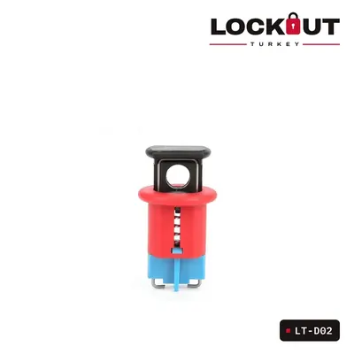
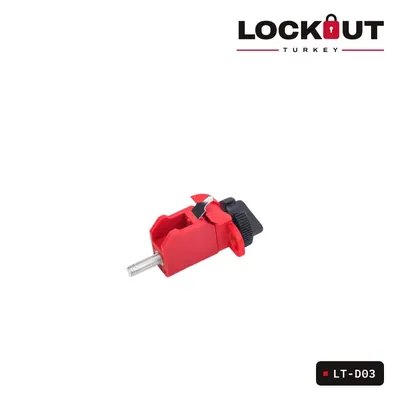
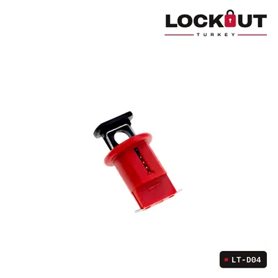
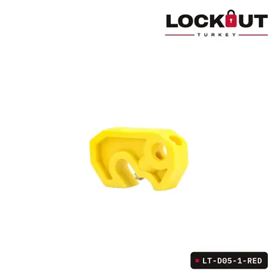
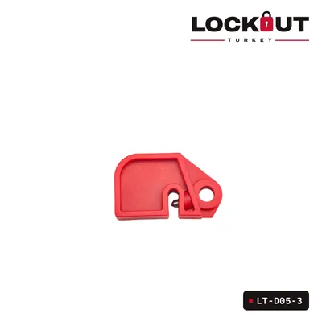
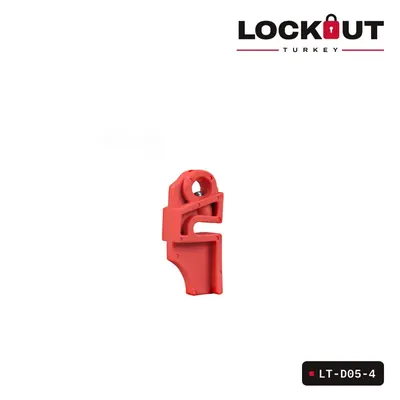
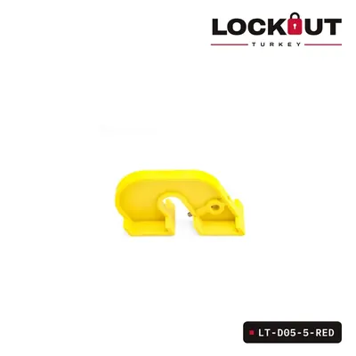
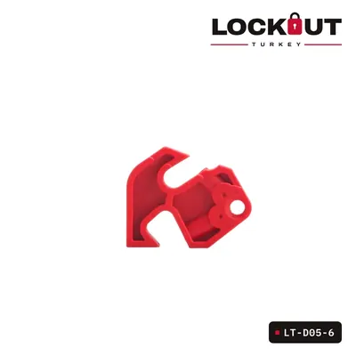
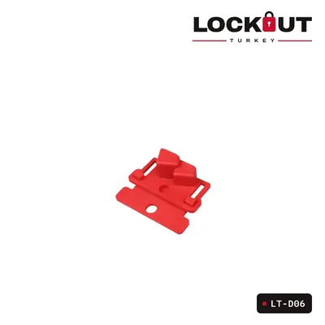
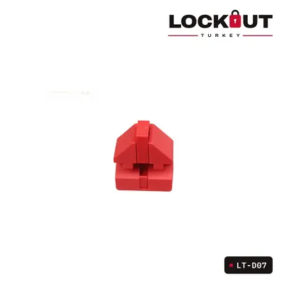
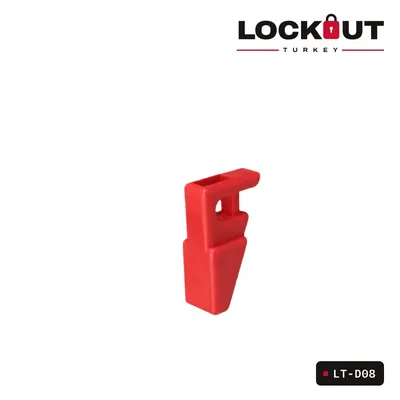
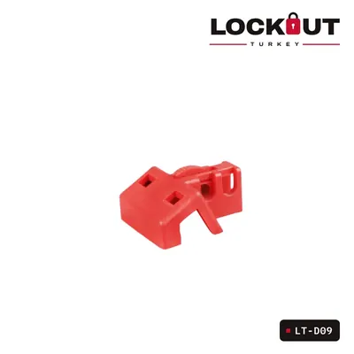
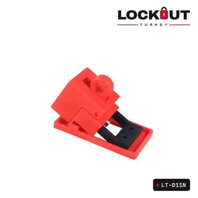
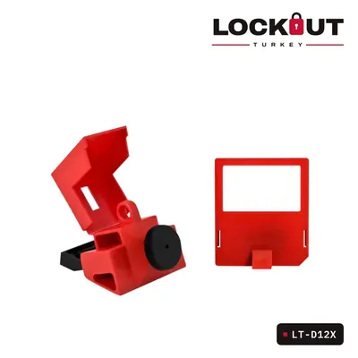
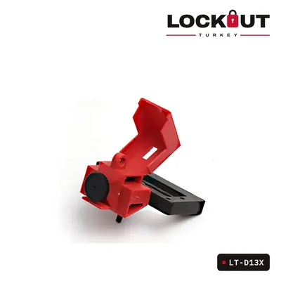
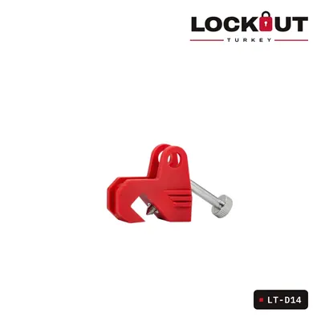
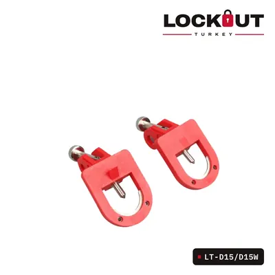
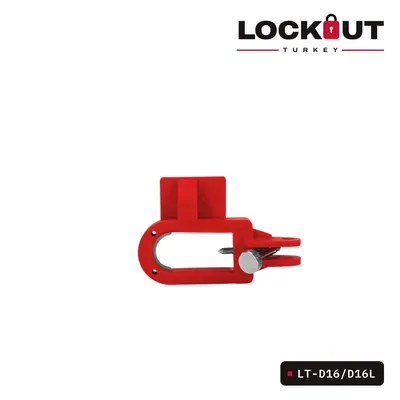
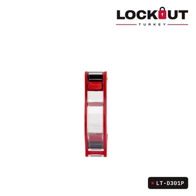
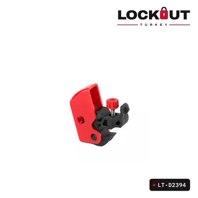
Tesisiniz için toplu teklif mi lazım?
Ürünleri teklif sepetine ekleyin ya da ihtiyacınızı WhatsApp’tan yazın; size özel teklifle dönelim.